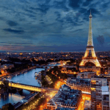

Giza, Egypt


Geographical Location: Africa
Giza is located on the western bank of the Nile River, and it is a historically and culturally significant city in Egypt. It is home to the Great Pyramids and the Sphinx, which are ancient wonders of the world. These monuments also raise many questions about how advanced the ancient Egyptians truly were. Giza has recently become a bustling city full of tourists and adventurers seeking to see the ancient lure of Egypt.
Giza is a city that is very unique for a lot of reasons. One reason why is the ability to be a vibrant city that also is able to blend in its vast historical heritage within its city life . One one side you can see the pyramids , and on the other you can see the bustling night life of Egypt. This city is also very close by to the capital of Egypt , which allows tourists to not only visit Giza , but they also gain the opportunity of going to the nearby capital and getting any work needed done.
Photo Gallery


Paris, France

Geographical Location: Europe
A city of culture, rich history, and fantastic food, Paris lives up to its iconic reputation in many ways. With notable landmarks including the Eiffel Tower, the Louvre, the Notre Dame, and the Arc de Triomphe, there is a long list of attractions that entice tourists from all over the world. If you get hungry, go visit one of the many Michelin-starred restaurants this city has to offer.
This magnificent city houses treasures like the Mona Lisa, and the Musée d'Orsay, showcasing various impressionist masterpieces. From the romantic allure of the Champs-Élysées to the winding Seine river, Paris is a magical place that cannot be rivaled.
Photo Gallery


Dubai, United Arab Emirates


Geographical Location: Asia
Dubai is a growing attraction for many travelers. This city is located in the United Arab Emirates on the southeastern coast of the Persian Gulf. Dubai is renowned for its iconic architecture, luxurious lifestyle, and rapid development. Dubai is a global hub for tourism, innovation, and business.
Dubai is a futuristic oasis in the middle of the desert. This city offers a unique blend of tradition and modernity. Towering skyscrapers offer a breathtaking skyline view. Dubai contains iconic buildings, malls, and islands that fuel its tourism.
Photo Gallery


New York City, USA


Geographical Location: North America
New York City, otherwise known as “The Big Apple,” is a bustling city in the United States of America. Home to about 8 million people, New York City houses popular attractions such as the statue of liberty, central park, the empire state building, and many more.
There are 5 boroughs within New York City, including Brooklyn, Manhattan, Staten Island, Queens, Bronx. Each borough is filled with different sights to see. New York City has many opportunities not only for those who live there, but also those visiting. From navigating the subway system to seeing a Broadway show, it is impossible to get bored.
Photo Gallery